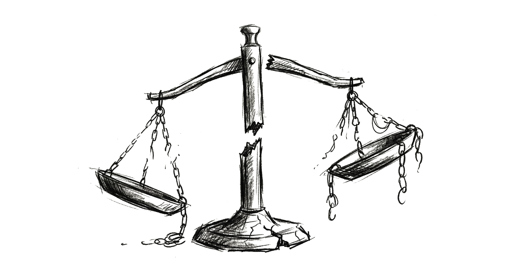

Why bail and sentencing algorithms face an unavoidable tradeoff
Author Name
March 9, 2026

In Shawshank Redemption (1994), one of the film’s main characters, Red, played by Morgan Freeman, repeatedly appears before a parole board. Each time, the parole board asks him the same question:
“Do you feel you’ve been rehabilitated?”
He gives careful, rehearsed answers to try to convince them that he has been rehabilitated, but each time, they deny him parole. Finally, at the end of the film, he bluntly responds that he doesn’t think he understands what the word “rehabilitated” means, and that he thinks that the concept is something the board has made up. After that hearing, the board grants him parole. The audience is left with the feeling that the parole board has no clear, rigorous criteria for making parole decisions; they depend on the whims and fancies of individuals who use their intuition and personal judgment to make decisions about whether or not to grant an individual their freedom.
The film is set between the 1940s and the 1960s, before more sophisticated techniques were put in place to make parole decisions. Nowadays, prediction tools use sophisticated algorithms, taking into account a wide variety of factors, including an individual’s criminal history, age at first arrest, substance abuse, employment history, family background, and even attitudes toward crime.
One such tool is COMPAS, developed by a company called “Northpointe” (now Equivant). It uses statistical models trained on historical data to make predictions about things like an individual’s likelihood of violating parole or failing to show up for a sentencing hearing.
In theory, it helps parole boards make scientific, data-based decisions, unlike what was depicted in Shawshank Redemption.
COMPAS has been used to evaluate more than 1 million defendants across the country. But in 2016, ProPublica published an article written by Julia Angwin, Jeff Larson, Surya Mattu, and Lauren Kirchner, called “Machine Bias”. They looked at over 10,000 defendants in Broward County, Florida. They compared what COMPAS predicted about their likelihood to recidivate or commit another crime to what actually happened. And they made a startling accusation.
They charged that COMPAS was biased against Black defendants. It was much more likely to incorrectly flag Black defendants as "high-risk" and incorrectly flag White defendants as "low-risk".
In their words,
In forecasting who would re-offend, the algorithm made mistakes with Black and White defendants at roughly the same rate but in very different ways. The formula was particularly likely to falsely flag Black defendants as future criminals, wrongly labeling them this way at almost twice the rate as White defendants. White defendants were mislabeled as low risk more often than Black defendants.
The creators of COMPAS at Northpointe published a response, written by William Dieterich, Christina Mendoza, and Tim Brennan, to the ProPublica article. The research report rejected ProPublica’s claims. They argued that for any given risk score that COMPAS assigned, Black and White defendants with that risk score re-offended at the same rates. In their words,
When the correct classification statistics are used, the data do not substantiate the ProPublica claim of racial bias towards blacks. The proper interpretation of the results... demonstrates that [the risk scores] are equally accurate for blacks and whites.
Here’s the twist – they were both right.
How can that be?
A Toy Model
The problem, it turned out, didn’t have anything to do with parole, sentencing, or racial bias. It was a problem that went deeper, to the mathematics of prediction itself.
To illustrate the problem, let’s use a toy model that abstracts away from the messy details in the data that Julia Angwin and her colleagues used.
It’s a model of grapes. Let’s take 2000 grapes, 1000 green and 1000 purple, and mix them all together. And suppose that some of them are poisoned.
There are many reasons why this model isn’t like the real-life case, besides the fact that the real-life case is about actual human beings and the model is about grapes. Here are a few worth
highlighting.
First, COMPAS gave individuals risk scores between 1 and 10, while our tool is more coarse-grained. It only sorts individuals into "high-risk" and "low-risk" categories.
Second, in our model, grapes are either poisoned or not poisoned, and this is fixed before our tool even looks at them. In the real-life case,
individuals in prison that were given higher risk scores by COMPAS were often denied parole and detained for longer. This might affect the outcomes - maybe someone who was given
a higher risk score and detained will because of that become more or less likely to re-offend in the future. So, we might worry that in the real-life case, predictions
were having (at least some) affect on the outcomes. Third, since we made up data about the grapes, we know exactly how many grapes are poisoned or safe. In the real-life case, however,
the data had to be collected. But, naturally, the outcomes we are we are able to collect data on is not about whether individuals re-offend, but about whether individuals are re-arrested. If, for example, Black neighborhoods are more likely to be policed,
Black individuals are more likely to be stopped, and Black individuals are more likely to be searched, then we might worry that the data COMPAS uses doesn't completely accurately represent
the underlying rate of offending, but rather reflects patterns of policing and arrest.1
Our model avoids some of these tricky issues, and for our purposes, these differences won't matter, since they won't affect the points in this article.
Base rates
Back to the model. Here is a crucial fact about the grapes in our model. The green grapes and purple grapes are not poisoned at the same rates. In other words, they have what’s called different “base rates”.
If we count up all the poisoned grapes in the original pile, we will find that 50 percent of purple grapes are poisoned (500 out of 1000) whereas 25 percent of green grapes are poisoned (250 out of 1000).
A Prediction Tool Sorts Grapes into Risk Categories
Suppose we use an algorithmic tool, just like COMPAS, that makes predictions about whether or not any given grape is poisoned.
It doesn’t know what we know about these grapes; it doesn’t know which ones are poisoned and which ones are safe.
It sorts grapes into two categories, “high-risk” and “low-risk”, based on some historical data.
Suppose that it isn't perfect: it puts some grapes that are actually poisoned in the "low-risk" category and some that are actually safe in the "high-risk" category.
But it is fairly accurate.
Say that it splits the purple grapes, 750 and 250, into the "high-risk" and "low-risk" categories, and it splits the green grapes, 125 and 875, into the "high-risk and "low-risk" categories, respectively.
(I picked these specific numbers somewhat arbitrarily, but with certain constraints that will be clear in a moment.)
There seems to be a problem. There are way more purple grapes in the “high-risk” category, and way more green grapes in the “low-risk" category. In fact, if we try to visualize this data, we can see this more clearly.
What we can see clearly is that the number of purple grapes is much larger than the number of green grapes in the “high-risk” category,
and the number of green grapes is much larger than the number of purple grapes in the “low-risk" category.
Percentages of Risk Labels Across Groups
But this, on its own, doesn’t necessarily mean that the tool is unfairly biased.
Since the groups have different base rates - the groups are poisoned at different rates - what we need to look at are the percentages.
For example, what percentage of purple grapes in the “high-risk” category are poisoned?
How does this compare to the percentage of green grapes in the “high-risk” category? (We would then ask the same questions about the “low-risk” category.)
It turns out that the tool we used to sort grapes into different categories ends up with exactly the same percentages across groups. More specifically, exactly 60 percent of both purple and green grapes are poisoned in the “high-risk” category, and exactly 20 percent of both purple and green grapes are poisoned in the “low-risk" category.
(This is no accident - I picked specific numbers about how the tool makes predictions to ensure this. In reality, the creators of COMPAS tweaked the algorithm it used to ensure this result.)
In machine learning contexts, this is called “calibration”. Say a tool makes predictions about certain outcomes, like whether an individual re-offends or whether a grape is poisoned.
A risk score, like the risk scores our hypothetical tools assigns to grapes, is calibrated within groups just in case: among the individuals who have the same risk score,
the actual probability of the outcome is the same, regardless of which group they belong to.2
For us, if the same percentage of purple grapes and green grapes are poisoned in the “high-risk” category (and similarly for the “low-risk” category), then our risk scoring is calibrated. Essentially, a purple grape and a green grape with the same risk score (high-risk or low-risk) must have the same probability of being poisoned.
If a prediction tool is calibrated, it seems as if the tool is fair. In contrast, if it is not calibrated - if say, a green and purple grape in the "high-risk" category have a different probability of being poisoned - it seems as if it is unfair.
This is exactly what Northpointe claimed. COMPAS was calibrated across groups; a Black individual and a White individual with the same risk score had the same probability of re-offending.
But calibration doesn’t tell us the whole story, and this is exactly what ProPublica claimed. ProPublica conceded that COMPAS was calibrated but still claimed it was unfair.
False Positive Rates Differ
To see why that might be, let’s turn back to our grape model, and this time, look at a different graphic.
We are still looking at high-risk and low-risk grapes, but this time, they are grouped by grape color.
Now, notice that there are grapes, of both colors, that were put in the “high-risk” category but are completely safe.
These are false positives, grapes that are actually safe but incorrectly labeled “high-risk”. For an imperfect prediction tool,
it’s inevitable that there will be some false positives; we could only completely avoid false positives if the tool was 100 percent accurate at predicting which grapes were poisoned and which ones were safe.
The important thing to notice now is that our prediction tool resulted in false positives at different rates, depending on the grape color.
Look at the “Purple Grapes” section (on the left) and notice how many purple grapes were put in the “high-risk” category, but are completely safe.
(For purple grapes, there are 300 safe grapes in the “high-risk" category, and only 200 safe grapes put in the “low-risk” category.)
Now, look at the “Green Grapes" section (on the right) and notice that there are very few safe grapes in the “high-risk” category.
(For green grapes, there are just 50 safe grapes in the “high-risk" category, and as many as 700 in the “low-risk” category.)
What we can see is that the false positive rate is different across different color groups. The false positive rate for a given group
is the percentage of grapes that were incorrectly marked “high-risk”.3 We can see this clearly below. (The false negative rate, the rate at which poisoned grapes
were put into the "low-risk" category, is also higher for green grapes, but let's focus on the false positive rate here.)
There are 300 purple grapes marked "high-risk" but that are actually safe. This is out of a total of 500 safe purple grapes. So, the false positive rate for purple grapes is 60 percent.
On the other hand, there are 50 green grapes that are marked "high-risk" but are actually safe. This is out of a total of 750 green grapes.
So, the false positive rate for green grapes is only 6.7 percent.
In short, the false positive rate for purple grapes is 60 percent, but only 6.7 percent for green grapes.
Think about it like this. Suppose we threw out every grape marked "high-risk". Now, if you're a safe, purple grape, you have a 60 percent chance of wrongly being thrown out.
There you are, minding your own business with no ability to poison anyone, but 60 percent of the time, you'll be thrown out anyway. On the other hand,
if you're a safe, green grape, you only have a 6.7 percent chance of wrongly being thrown out. This seems unfair.
This is precisely what ProPublica argued. Even though COMPAS was calibrated – Black and White individuals with the same risk score had the same probability of re-offending – it had different error rates. For example, the false positive rate was much higher for Black individuals than for White individuals. As a result, Black individuals who did not re-offend were much more likely to be predicted to be high-risk than their White counterparts.
These individuals were denied parole, forced to pay higher bails, denied release, and even given longer sentences.
The burdens of the errors that the tool made were disproportionately falling on Black individuals. (The false negative rate was also higher for White individuals, but again, let's just focus on the false positive rate.)
Impossibility
Given this issue with COMPAS, it seems natural to think that we should adjust COMPAS so that it no longer has different false positive rates for Black and White individuals. Ideally, our tool would be calibrated (same risk scores, same probability of re-offense) and have equal error rates.
But it turns out, in any realistic situation, this is mathematically impossible.
In a result achieved by Jon Kleinberg, Sendhil Mullainathan, and Manish Raghavan,
and then in another result achieved indepednetly by Alexandra Chouldechova, it was proven that in any realistic situation,
you cannot simultaneously have calibration and equal error rates. They proved that in any realistic situation, if we have a calibrated tool, then it must have different error rates, and if it has equal error rates, it must violate calibration.
What do I mean here by “realistic situation”? There are two conditions that need to be met for the impossibility result to hold. First, the tool isn’t perfectly accurate. A calibrated tool that is perfectly accurate, will, by definition, make no errors, so the error rate will be 0. So, unless some tool is able to predict with 100 percent accuracy whether an individual will re-offend or not, this condition is met.
Second, and more importantly, there are different base rates between groups. In our grape model, this meant that green grapes and purple grapes were not poisoned at exactly the same rates. In the real-life situation, this means that Black individuals and White individuals don’t re-offend at exactly the same rate.
Now, there may be many reasons for this. Note that, as I mentioned above, the difference in "base rates" isn't a difference in re-offense rates, but a difference in re-arrest rates. Perhaps,
as I mentioned above, this difference is partly due to an excess of policing and surveillance of Black neighborhoods. But even setting this aside,
there are many factors that correlate with recidivism that are unevenly distributed between Black and White people. Poverty and income instability, unemployment, housing instability, and less access
to education and training can increase the probability of re-offense. If there are disparities in these factors between Black and White individuals, this might also partly explain differences in base rates.
Further, returning to a neighborhood with higher crime rates and weaker social services may cause a higher likelihood of re-offending.
If there already exist higher crime rates with weaker social services in Black neighborhoods, these differences can be exacerbated.4
Whatever the possible explanations, the important point here is that the base rates differed. If they differ, a calibrated tool that is not 100 percent accurate will make errors at different rates, by mathematical necessity.
Understanding Impossibility: Calibration but Unequal Error Rates
The proofs I mentioned above were for any possible (imperfect) model, with any given population that had differing base rates.
It was a general proof.
But it might be worth seeing the main idea at work in an example that gives a sense of how (in a realistic situation) calibration and equal error rates are mutually incompatible.
Let’s turn back to our grape model one last time.
First, why does satisfying calibration imply that there will be different error rates?
Let's look at our calibrated prediction tool. For both purple and green grapes, a grape in the "high-risk" category has a 60 percent chance of being poisoned and a grape
in the "low-risk" category has a 20 percent chance of being poisoned. (This is the same graphic as above.)
Now - and this is the key - purple and green grapes have different base rates. Overall, 50 percent of purple grapes are poisoned and only 25 percent of green grapes
are poisoned.
Because of that, two things happen. First, to get calibration, it has to be that in the "high-risk" category, the percentage of poisoned purple grapes equals the percent of poisoned green grapes.
So, the prediction tool puts a higher percent of the purple grapes into the "high-risk" bin. (If it didn't - if say, it put exactly 50 percent of the purple grapes and exactly
50 percent of the green grapes, then because of the different base rates, the probability of a high-risk grape being poisoned would differ across groups, violating calibration.)
Now, because the tool isn't perfect - high-risk grapes are still 40 percent safe - this will inevitably mean
putting a higher percentage of safe purple grapes into the "high-risk" bin than green grapes.
Second, because the base rates differ, a higher percent of green grapes are safe compared to purple grapes.
Now, in our model, the false positive rate is
\[
\frac{\text{# of safe grapes labeled high-risk}}{\text{# of safe grapes}}
\]
We have seen that (1) the percent of safe purple grapes in the "high-risk" bin is pushed higher, and at the same time,
(2) the percent of safe green grapes is higher than the percent of safe purple grapes.
In other words, the numerator is pushed up for purple grapes and the denominator is pushed up for green grapes. So, the false positive rate goes up for purple grapes and down for green grapes. That's why
calibration forces the false positive rate to differ when base rates differ.
Understanding Impossibility: Equalized Error Rates but No Calibration
Now, let's try to understand the other direction - why does equalizing the error rates violate calibration?
Let’s look at our grape model again. Suppose we noticed that the error rates differed based on the grape color: for purple grapes, the false positive rate was 60 percent but for green grapes, the false positive rate was only 6.7 percent.
Suppose we tried to tinker with the algorithm to fix this, say, by adjusting the predictions so that the false positive rate equalized. We would have to explicitly tell the algorithm, “If you see a purple grape use the old procedure, but if you see a green grape, use this new procedure so that it is more likely to end up in the ‘high-risk’ category.’
Let’s say we adjust the algorithm so that it puts 500 more green grapes in the “high-risk” category instead of the “low-risk” one. (I picked "500" in order to equalize the base rates, as
will be clear in a moment.)
Now, there are 1375 grapes in the “high-risk” category, and many more of them are green grapes.
By moving green grapes into the “high-risk” category, we have made it so that more green grapes are incorrectly marked as “high-risk”. This, based on the numbers of grapes we have, equalizes the false positive rates across groups.
But to do this, remember, we had to change the algorithm in our prediction tool! We had to adjust it, so that a green grape with a low predicted probability of being poisoned would still end up in the “high-risk” category.
We had to do this, while still using the same algorithm for purple grapes.
Because of this, we end up with different percentages of poisoned grapes across risk categories. (This is unlike before, in which the percentages of poisoned grapes were identical across risk categories.)
It’s no longer the case that exactly the same percent of poisoned grapes end up in “high-risk” and “low-risk” categories respectively.
The tool, in other words, is no longer calibrated.
Conclusion
What is the takeaway of all this? We can put the problem like this.
There are two views we might have on fairness in this machine learning context.
On one view of fairness, the calibration view, a fair prediction algorithm is one that is calibrated.
Any two individuals from two different groups with the same risk score should have the same probability of re-offending.
Defenders of this view would argue that violating this would mean using a different procedure for individuals of different groups.
On another view of fairness, the error rate view, a fair prediction algorithm is one that has equalized error rates across groups.
Defenders of this view would argue that violating this would mean that one group disproportionately bears the burden of errors made by the tool.
And the takeaway is that in any realistic situation, it's mathematically impossible for us to design a tool that satisfies both.
Which is the right view of fairness in this context? Check out Part Two!
Footnotes
1
Here is some evidence to support this. A very well-cited study, Stanford Open Policing Project,
analyzed 100 million traffic stops across the U.S. and found
that Black drivers are stopped more often than White drivers, relative to their share in the population. Another study
found that Black drivers are also searched more often that White drivers. Finally, here is a study that found that police presence is higher in Black neighborhoods.↩
2 Here is a formal definition. For a given outcome \(Y\), and groups \(a\) and \(b\), and a risk score \(s\), calibration requires that
\[
P(Y=+ \mid S=s, A=a) = P(Y=+ \mid S=s, A=b), \quad \forall s \in S, \; \forall a,b \in A.
\]
This is saying that the probability that a given outcome occurs (\(Y=+\)) is the same, for any two individuals from two different groups \(a\) and \(b\), given that the model’s risk score \(S\) for both of those individuals is the same, \(s\).↩
3 Here is a formal definition.
\[
\mathrm{FPR} = P(\hat{Y}=+ \mid Y=-)
\]
This says that the false positive rate is equal to the probability that a predicted label (\(\hat{Y}\)) predicts a certain outcome (\(\hat{Y}=1\)), but the outcome (\(Y\)) does not occur (\(Y=-\)).↩
4 Here is a large criminology study that found that unemployed individuals had much higher likelihood of being reincarcerated than
employed individuals. Here is a study that reviewed recidivism research and found low education as a major prediction
of re-offending after prison. Here is a study that found that many formerly incarcerated people return to
neighborhoods characterized by poverty, unemployment, and high crime, and that returning to these neighborhoods increases the risk of re-offending after prison. Finally, here is a longitudinal
study that found that Black and Hispanic individuals tend to return to more disadvantaged neighborhoods than White
individuals, even accounting for differences in neighborhoods before prison.↩
Risk Labels Across Two Groups (Numbers)
Purple total: 1000 · poisoned 500 · safe 500
Green total: 1000 · poisoned 250 · safe 750
PoisonedSafe
HIGH risk
LOW risk
New Risk Labels Across Two Groups (Numbers)
High risk total: 1375 · purple 750 · green 625
Low risk total: 625 · purple 250 · green 375
PoisonedSafe
HIGH risk
LOW risk
Risk Labels Across Two Groups (Percentages)
Purple total: 1000 · poisoned 500 · safe 500
Green total: 1000 · poisoned 250 · safe 750
PoisonedSafe
HIGH risk
LOW risk
Calibration Breaks
Purple total: 1000 · poisoned 500 · safe 500
Green total: 1000 · poisoned 250 · safe 750
PoisonedSafe
HIGH risk
Purple: 750 total → 450 poisoned (60%), 300 safe (40%)
Green: 625 total → 175 poisoned (28%), 450 safe (72%)
LOW risk
Purple: 250 total → 50 poisoned (20%), 200 safe (80%)
Green: 375 total → 75 poisoned (20%), 300 safe (80%)
Risk Labels Grouped by Grape Color
Purple Grapes
Green Grapes
New False Positive Rate
Purple FPR = 300 / 500 = 60%
Green FPR = 450 / 750 = 60%
Gap = 0
False positivesTrue negatives
Purple Grapes
Safe total: 500 · High-risk among safe: 300 · Low-risk among safe: 200
60% of safe grapes labeled "high"
Green Grapes
Safe total: 750 · High-risk among safe: 450 · Low-risk among safe: 300